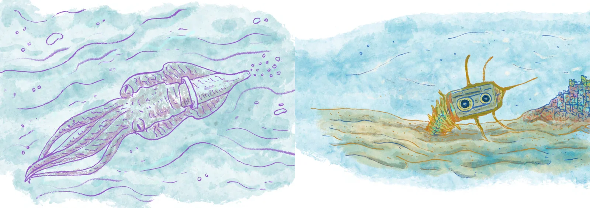
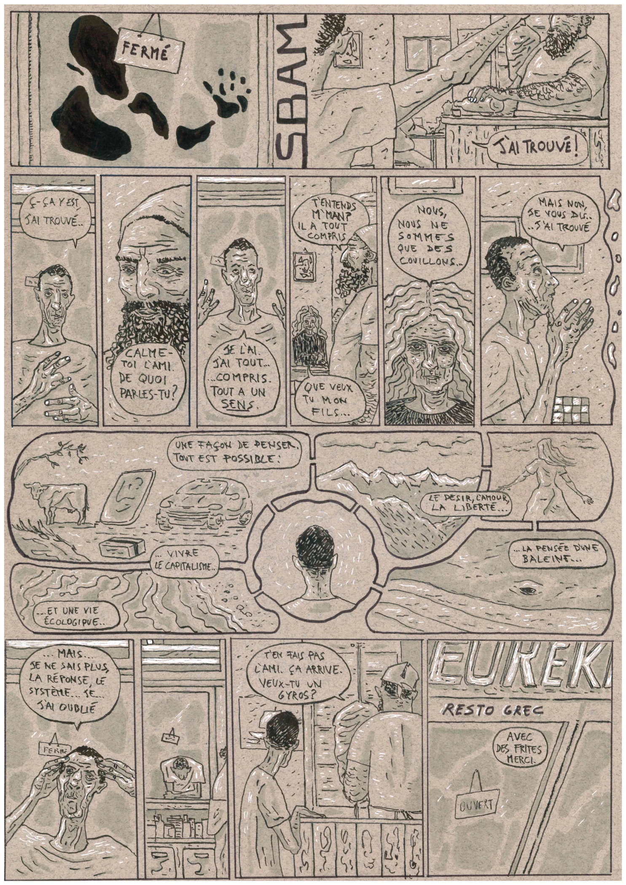
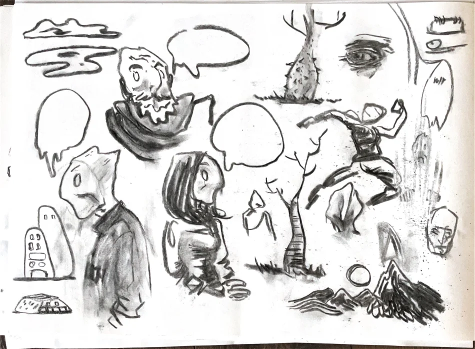

← Full portfolioFolco Soffietti / Illustration, comics & drawings
Illustration, comics
& drawings.
There is always a story behind. Illustration and comics are great media for bringing scientific and technological subjects closer, through characters, images and a little imagination.
Explore the work ↓
01 / Illustration · Children’s book · Storytelling
An exploration at sea, for children and the adults reading with them. Drawing, language and scientific knowledge come together in an illustrated story about the marine world and plastic.
Explore the work ↗
02 / Comics · BDFIL 2020
A one-page comic created for participation in BDFIL 2020.
Explore the work ↗

04 / Drawing · Sketchbook
Drawing is a way of working things out. Figures, landscapes, visual notes and half-formed stories share these pages, connecting the more structured parts of my practice with observation and play.
Explore the work ↗